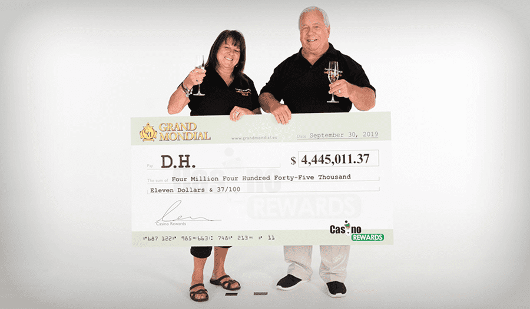
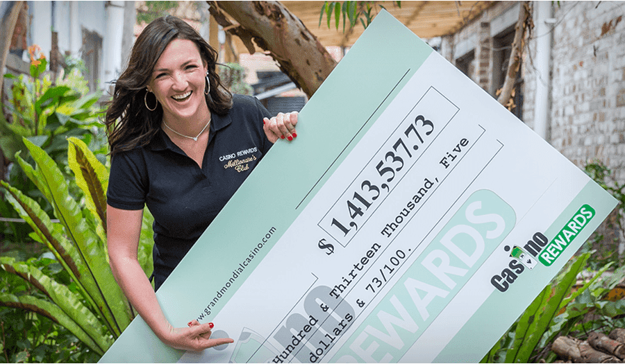
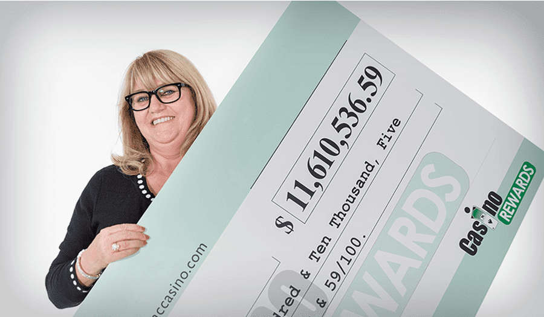
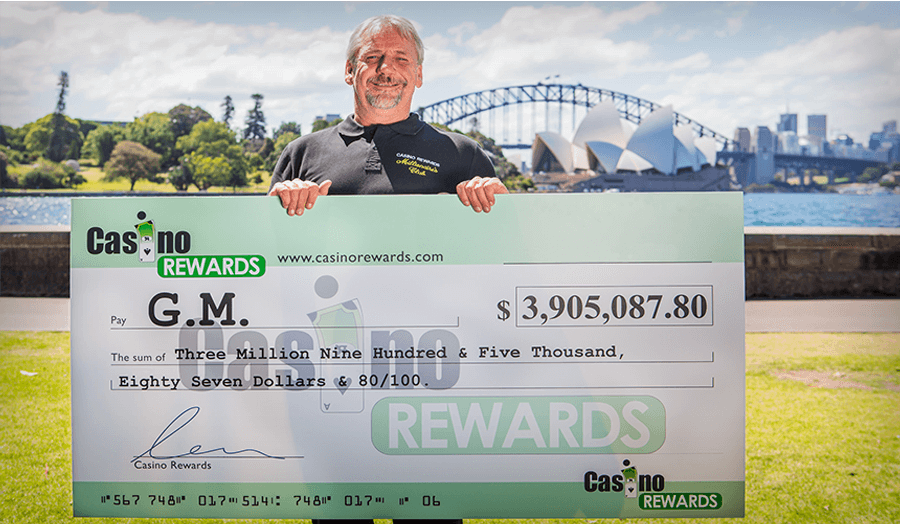
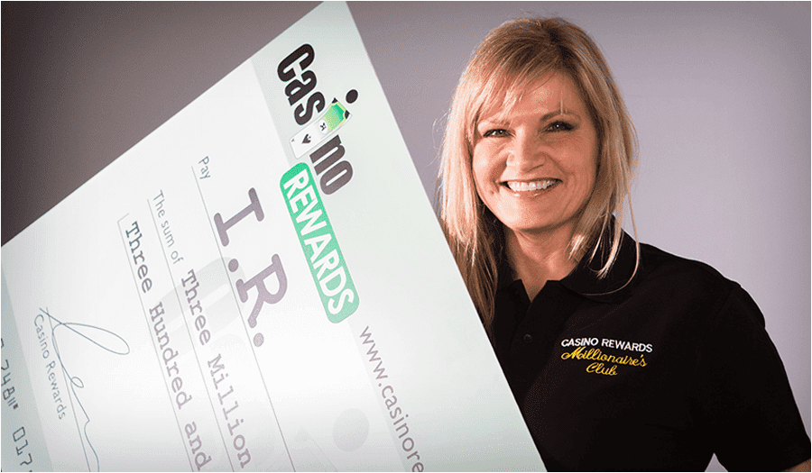
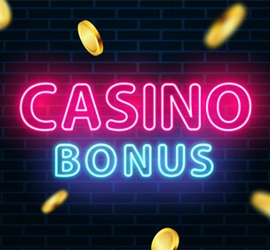

Online Casinos — The Real Truth Exposed!
Does it feel like everyone is winning money online (even on their mobile phones) while you're missing out? Do you keep reading about these lucky winners and wish it was you?
That’s because online gambling sites really are paying out millions of more dollars than ever. If you want to boost your chances of becoming the next online slots millionaire, make sure you read the below to ensure you maximize your chances to win big!
Recent Progressive Jackpot Winners
Lots of people are winning big jackpots online everyday — will you be next?
Tip #1:
Cash In Big Money Bonuses
HUGE Competition has resulted in the multibillion $ online casino industry literally throwing money at people to get you through the door.
This includes money that can be used to win multimillion $ jackpots, along with even more money if you decide to deposit. Many players are taking advantage of this and hitting life-changing wins.
You too should take advantage of the free bonuses before they get removed.
Current Top Casino Bonus:
Our team of researchers did some digging to find the best online casino offer, from trustworthy casinos.
100% UP TO $150 MATCH BONUS
+ 25 FREE CHANCES TO BECOME
AN INSTANT MILLIONAIRE
BONUS CODE: Applied Automatically
+ $850 bonus over next deposits
However, don't just settle for the money bonuses. Once they have your business, casinos will do anything to keep you. That’s why they offer huge incentives for you to make your first deposit. In some cases, casinos will double or even triple your first deposit. So if you were to deposit just $50 you could have $100 or even $150 in your account to play with.
That’s doubling and even tripling your chances to win huge jackpots.
Tip #2:
High Payout Rates = Highest Chances of Winning
Don’t rush to the game that looks the most exciting. BIG mistake. Instead look for the slots with the highest payout rates.
The higher the payout rate, the higher the probability of a win. All online casinos MUST publish the payout rates, which usually range from 91% to 99%. Obviously, the higher the number, the higher chance you have of winning. In comparison, most slots machines in land-based casinos range from 70% to 90% (You can check yourself in the game instructions or by asking a customer service agent directly).
Online casinos offer hundreds of different games to play and choose from.
IMPORTANT: The older the game is, the higher the payout!
For example if you play a famous game like Game of Thrones™ Online Slot, its payout will be way lower because as brand owner, Hollywood will take a piece of the cake and guess what? They take that cut directly from the payout of the game. That’s why we recommend to never play big brand online slots like GOT™, Bridesmaids™, Hitman™, Moby Dick™, Jurassic World®, and Playboy™.
Instead, we recommend you get started on the following online slot games: Mega Vault Millionaire, King Cashalot and Atlantean Treasures. Choose just one game to start and if you get a nice win, take a break and move on to the next game.
To get started: Claim your 100% match bonus up to $150 + 25 free chances to become an instant millionaire on 1st deposit at Luxury Casino.
Tip #3:
Play progressive jackpots online for your chance to make millions!
Yes it's true! Look for a progressive jackpot slot like the ones mentioned above in the article, their jackpots are regularly over $1 million. Luxury Casino offers to new players is 25 FREE spins on the progressive slot game Mega Vault Millionaire on first deposit and a 100% match bonus up to $150 which means you have 25 chances to win huge jackpots instantly.
These players tried Mega Vault Millionaire and won big:
What does it feel like to become a slot millionaire?
Scroll down to read the stories of these six recent winners...
D.H. turned just $1 in to over $4.4 million
The ecstatic new millionaire plans to retire early with his $4,445,011.37 win.
“This win means everything! I don't have a massive pension, so at this stage in our life and retirement, it's everything. It will make a lot of people's lives easier. I don't think anyone expects to win this kind of money. That's better than most investments, hey! It's worth the $1!”
K.T. won $1,413,537.73 within 24 hours of joining the casino
An emotional K.T. said, “Holy smokes! It's such an adrenaline rush!”.
"This can't be a thing! This is unreal! I had to keep checking and call my sister! There has been a lot of laughing and crying! The first thing she said was that I really deserve this! My grandpa always played the lotto every day saying he would win."
"I've been speaking to him, saying "I just want to win grandpa!". I never believed that this would happen! He's watching over me."
D.P. won a record smashing $11,610,536.59
D.P.’s win set a record for the biggest jackpot ever won on a mobile device.
"I hit spin, the wheel appeared, and then, incredible but true; I HIT THE JACKPOT - $11.6 million! I started screaming, crying and running all around the house! I thought, ‘It's incredible, it's not possible, could I be a multi-millionaire??’"
"My husband didn't believe me, and he kept saying it was impossible that anyone could win that much money online. I told him, ‘All our troubles are gone!’"
G.M. won an eye watering $3,905,087.80 after using free spins
The instant multi-millionaire was in complete shock when luck struck.
"When you win, so many things go through your head about what to do with the money. When I hit the jackpot, I just stared at my screen, then stared at the jackpot and at my account. I stared at it for what seemed like forever. Then it hit me and I started doing a dance and hootin' and hollerin' - it was crazy!"
"I'm going to go on vacation for a while and maybe buy some toys when I get back. My advice to the millions of other Casino Rewards players is this: as long as you're having fun at it, you never know, it may happen to you. It's true, it happens. Here I am!"
M.G. ended the year a multimillionaire when he hit the Mega Jackpot
M.G. won a life changing €4,278,677.94 using his welcome bonus.
“You don’t win like this every day and it has changed a lot for me. My life has been turned upside down! But the most positive thing for me, in my age, is that I can stop working and really go for what I want to do and enjoy my life. Try it. He who dares, wins!”
I.R. had a feeling the one day a big win would come her way
Fate brought a Mega $3,390,332.58 windfall in to the grateful hands of I.R.
"I just knew I was going to win something really big. I even told my friends, I think I'm going to win a house... but this is so much better than a house! I thought maybe there was something wrong; I thought it was meant to be $30 or maybe $300... but never $3 million."
"I thought there had been a mistake. My mum was sleeping so I didn't wake her up as I still didn't believe it. I went to sleep and woke up the next day and thought I'd had a dream, so I went to check my phone... but the money was still there!"
Tip #4:
Use the Casino’s money to win big
As you know, casinos give out huge bonuses to get you to start playing. What’s important to remember is that these bonuses are not real cash, you can’t cash them in. THE GOOD NEWS: you can use the bonus to bet with and all your winnings are in real money and can be cashed in... so why not use the bonus to play the machines that pay the most?
The Mega Vault Millionaire slot machine for example only requires a $0.25 bet to win the jackpot. Luxury Casino has done the math for you already and your first deposit, they will give you 25 free chances to change your life and a 100% match bonus up to $150. Imagine it’s like getting 25 lottery tickets BUT with MUCH BETTER chances of hitting it big.
Tip #5:
Don't get greedy! Cash-out your winnings
Last but not least, but perhaps the most important rule of all is "Don't Be Greedy".
Online casino success is about winning money - not winning money and then losing it all again. A win is a win, no matter how big or small. Set yourself targets and stick to them. So if your target is to win $100, once you reach that amount cash out your winnings. Know when to quit. Remember you have not won until you have cashed out the money.
Do you want to become the next slot millionaire?
Here's how to get started:
Step #1: Choose a Casino Bonus
Choose a generous casino bonus like the one from the table below and clock to claim and play. Remember to note down the casino promotion code or in some cases, the bonus is automatically applied.
Step #3: Cash In On Deposit Bonuses
Checkout the casino deposit bonuses to double or even triple your money.
Then play on the slots with the highest payout percentages. If you deposit $50 and get $100 or even $150 to play with and play on the highest payout slots, it's very likely you will be able to work through the bonus terms and cash out your money at a profit.
Special Limited-Time Offer: (25 Chances on First Deposit)
After reaching out to online casinos, Luxury Casino has generously offered to give our readers an Exclusive 25 Chances to become an instant millionaire on first deposit & Welcome Package up to $850!
Play For Real. Win Now!
Simply register a real casino account, log into the software, and visit the cashier and your 25 Chances will be automatically credited to your account as well as a 100% match bonus up to $150. Once you claim the bonus, you will get your initial 25 chances for the Mega Vault Millionaire Progressive Jackpot Slots.
This jackpot slot has made multiple people millionaires. Are you next?